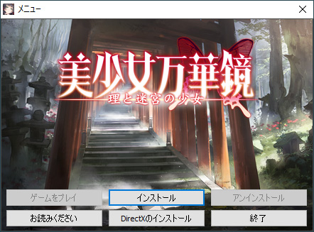
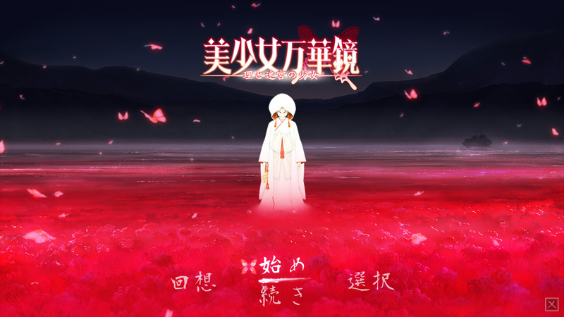
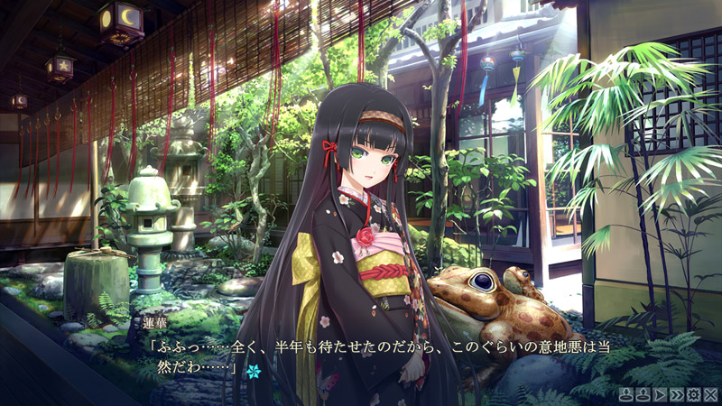
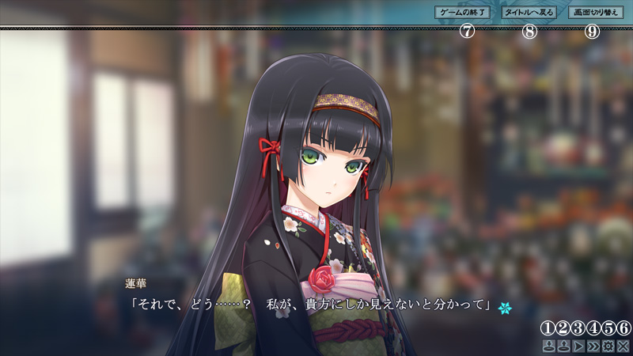
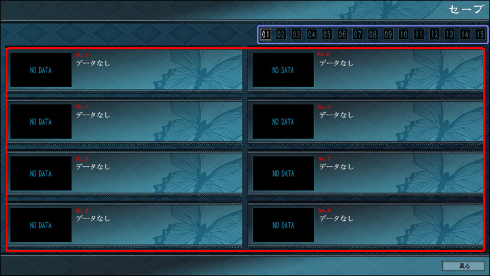
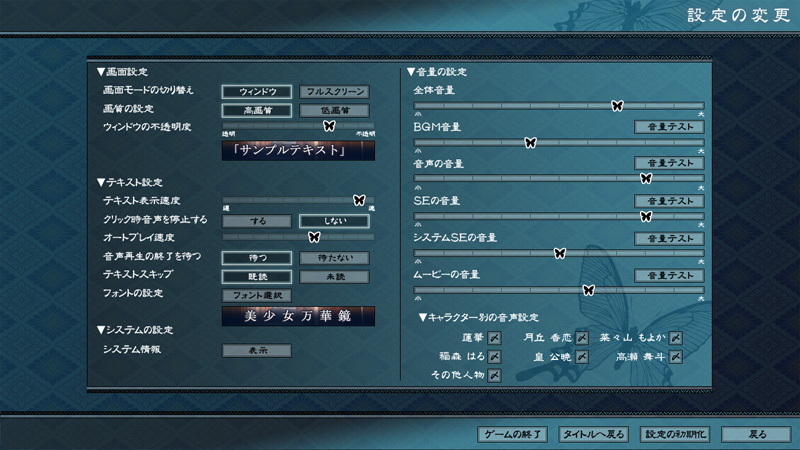

本作品には暴力的、残酷的シーン、犯罪にあたる行為等、過激な表現が含まれています。
気分を害するおそれがありますので御注意ください。
また、犯罪にあたる行為を絶対に真似しないでください。
本作品には未成年者にふさわしくない表現が含まれています。18歳未満の方のプレイはご遠慮ください。
本作品に登場する地名、人名、団体名等はすべて架空のものであり、実在するものとは一切関係ありません。
また、登場する人物は全て18歳以上です。
本製品をプレイするには、以下の環境が必要です。
◇対応OS
Windows 7/8/8.1/10（日本語版）
◇CPU
CPU：Intel Core2 Duo以上
◇メモリ
1GB以上
◇解像度
1280×720以上、フルカラー
フルスクリーン/ウィンドウの切り替え可
◇グラフィック
ビデオメモリ64MB以上搭載したATI社RADEONシリーズ並びにNVIDIA社GeForceシリーズのAGP/PCI-Eグラフィックカード
※ハードウェアとデバイスドライバがDirectX9.0c以降に対応している必要があります。
◇HDD
4GB以上
◇サウンド
必須：DirectSoundに対応したサウンドカード
※ハードウェアとデバイスドライバがDirectX9.0c以降に対応している必要があります。
◇DirectX
9.0c以降（本ソフトウェアに同梱されています）
以下の環境での動作は保証致しかねますので、ご了承下さい。
◆動作環境に記載のオペレーティングシステム以外での動作
◆本ソフト以外のアプリケーションと同時使用された場合の動作
◆ハードウェアがDirectX9.0cに対応していない場合や、特殊な自作PCでの正常動作
※オペレーティングシステムが正常に動作する為には、Windowsがインストールされているドライブに十分な空き容量が必要となります。
※NEC PC-9800、PC-9821シリーズでの動作は保証しておりません。
本ソフトをお楽しみいただく為には、製品のディスクからデータをインストールする必要があります。
①『美少女万華鏡 理と迷宮の少女』のディスクをDVD-ROMドライブに挿入してください。
オートランに対応している場合は、自動的にメニューが起動いたします。
起動しない場合はDVD-ROMを開き、ディスク内の「AutoRunMenu.exe」を実行してください。
②お使いのPCにDirectX9.0c以上がインストールされていない場合は、
「DirectX9.0cのインストール」をクリックし、DirectXをセットアップしてください。
③メニューの「インストール」をクリックすると、『美少女万華鏡 理と迷宮の少女』のインストーラーが
起動しますので、画面の指示に従ってインストール作業を行ってください
以下の手順に従ってアンインストールしてください。
①『美少女万華鏡 理と迷宮の少女』のディスクを、DVD-ROMドライブに挿入してください。
オートランに対応している場合は、自動的にメニューが起動いたします。
起動しない場合はDVD-ROMを開き、ディスク内の「AutoRunMenu.exe」を実行してください。
②メニューの「アンインストール」をクリックしてください。
③画面の指示に従って、アンインストール作業を行ってください。
※アンインストールした場合も「セーブファイル」は削除されません。
お手数ですが、インストールしたフォルダから直接削除してください。
①起動している他のアプリケーション、常駐ソフトを終了してください。
終了させずにゲームを起動しますと、プログラムの干渉が起こり動作が不安定になる事があります。
またディスプレイの発色数を必ず「High Color(16bit)」以上に設定してください。
②『美少女万華鏡 理と迷宮の少女』のディスクを、DVD-ROMドライブに挿入してください。
オートランに対応している場合は、自動的にメニューが起動いたします。
起動しない場合はDVD-ROMを開き、ディスク内の「AutoRunMenu.exe」を実行してください。
③メニューの「ゲームの起動」をクリックしてください。
ゲーム起動時に、環境によっては自動的にインターネットに接続される場合がございますが、この接続は米国マイクロソフト社によって行われるもので、弊社が意図して行っているものではございません。それによる弊害が無いことは確認済みですが、どうしても接続を行いたくない場合には、InternetExplorerの[ツール]-[インターネットオプション]-[詳細設定]の中にセキュリティ項目の「発行元証明書の取り消しを確認する」のチェックを外してください。
ゲームの画面表示方法、フルスクリーン時のフィルタを選択します。
上段のフィルタほどフルスクリーン時に高画質でお楽しみいただけますが高性能なビデオカードが必要になります。
設定が終了しましたら、起動ボタンをクリックしてゲームを起動してください。
ゲームを起動すると、以下のメニューが表示されます。
『美少女万華鏡 理と迷宮の少女』はコマンドを選択する事で物語を読み進めていくADVゲームです。
画面上の各ボタンアイコンをクリックすることで以下の操作ができます。
ゲームのセーブ・ロードはシステムメニューからそれぞれの画面を呼び出して行います。
青枠の部分でページを選択します。全15ページあります。
赤枠の部分を選択してデータをセーブまたはロードします。データは1ページで8個セーブまたはロードできます。
設定画面から各種設定を行えます。
Ｑ：起動しない、表示されるが動作が異常に遅い
Ａ：画面表示モードを変更することで解決される場合があります。
初期状態ではDirect3Dを使って画面表示を行っていますが、古いグラフィックボード等では速度低下の原因になる場合があります。
Windows7の環境では「Direct3D」でないとフルスクリーン時の補間が利かず、画質が低下してしまいますのでご注意下さい。
Ｑ：ファイル破損が検出されて強制終了される
Ａ：インストールされたファイルが壊れている可能性があります。再度インストールし直して下さい。
ダウンロード版の場合、データの一部がダウンロード環境によっては化けてしまうことがあります。
インストールしたファイルの破損、HDDの不良セクタ、SSDの書き込み限界等が考えられます。
再度、ダウンロードし、インストールし直して下さい。
何度も同じ症状が出る場合は、HDDドライブを変えてみると改善される場合があります。
Ｑ：リソース不足のエラーが表示されます
Ａ：OSを再起動して、起動中の他のアプリケーションを終了させてください。
メモリがたくさんあってもシステムリソースが不足することはあります。
特に、セキュリティソフト、ブラウザ等はリソースを多く消費する傾向にあります。
Ｑ：DSound.DLL内部でエラーが発生する
Ａ：サウンドカードの不都合によるものです。一部機能をオミットすると動く場合があります。
一部のサウンドカード、ドライバにおいて、一部の機能にバグがあるものが存在します。
使用するだけでエラーが発生するので、一部機能を無効化することで回避することが出来ます。
実行ファイルと同じ場所にある「エンジン設定.exe」を起動して「ダイレクトサウンドの一部無効化」を有効にして下さい。
なお、この設定を有効にすると一部の音が出なくなることがあります。
説明は以上です、美少女万華鏡の世界をお楽しみください。
本製品に含まれる全てのデータの著作権は、ωstarに帰属します。
本製品に含まれる全てのデータ（グラフィック、プログラム、テキスト、音楽等）を複写、複製、加工、転載、また著作権者の許可無くWEB等で使用する事を堅く禁じます。
「DirectX」は再配布許諾版の添付につき、米国Microsoft Corporationの許可を得ております。
OggVorbisはXiph.org Foundation社の著作物であり、『美少女万華鏡 理と迷宮の少女』ではBSDライセンスの下で使用しています。
Windowsは米国Microsoft Corporationの登録商標です。
その他各製品名は各社の商標および登録商標です。
Copyright (C) 2020 omegastar All rights reserved.